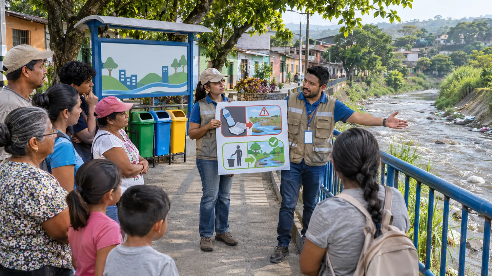

Prevenir
Reducir residuos y vertidos desde su origen; mejorar hábitos, recolección y producción responsable.
Recuperación integral
La meta es reducir la carga contaminante, mejorar la calidad del agua, restaurar funciones ecológicas y fortalecer una comunidad informada.
Ruta de recuperación
Ninguna medida aislada resuelve un problema de cuenca.
Reducir residuos y vertidos desde su origen; mejorar hábitos, recolección y producción responsable.
Gestionar las aguas residuales antes de descargarlas y dar mantenimiento a la infraestructura.
Aplicar normativa, inspeccionar, caracterizar descargas y hacer públicos los resultados comparables.
Proteger riberas, vegetación, suelos, microhábitats y capacidad natural de autodepuración.
Sostener participación, aprendizaje y seguimiento mediante indicadores verificables.

Responsabilidades compartidas
Planificar saneamiento, aplicar normativa, financiar obras, monitorear y publicar indicadores.
Prevenir residuos, reportar puntos críticos y participar en acciones organizadas y seguras.
Relacionar ciencia, ciudadanía y territorio mediante investigación, comunicación y proyectos.
Caracterizar y tratar sus descargas, prevenir fugas y cumplir las obligaciones ambientales.
Plan presentado en 2025
ASA y AECID, con colaboración del MARN, presentaron un plan para el saneamiento y restauración del Matalapa y parte del Acelhuate. La presentación de un plan no demuestra por sí sola que todas sus medidas estén concluidas.
Comparar parámetros en lugares y periodos definidos.
Medir caudal, concentración y aportes reducidos.
Informar obras, funcionamiento, mantenimiento y cobertura.
Evaluar riberas, vegetación y condiciones de hábitat.
Publicar metodología, fechas, resultados y limitaciones.
Acción educativa
Las actividades comunitarias funcionan mejor cuando incluyen prevención, clasificación de residuos, seguridad, registro de evidencias y seguimiento.
